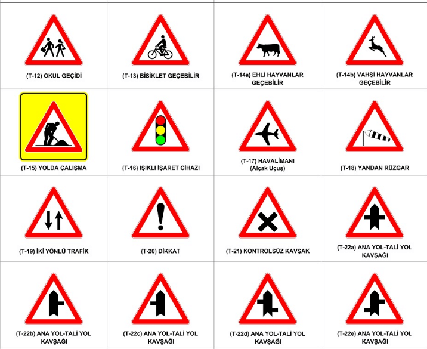
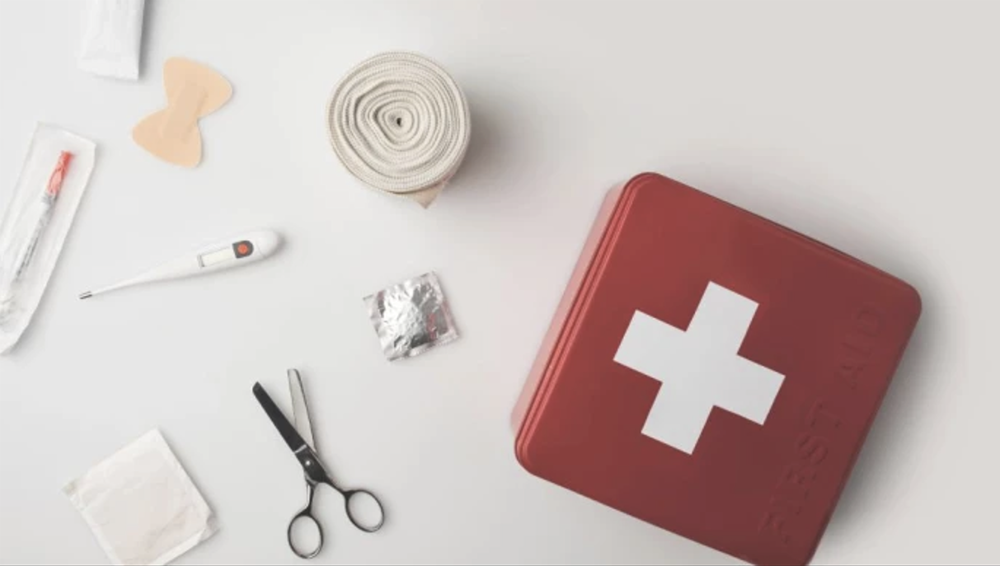
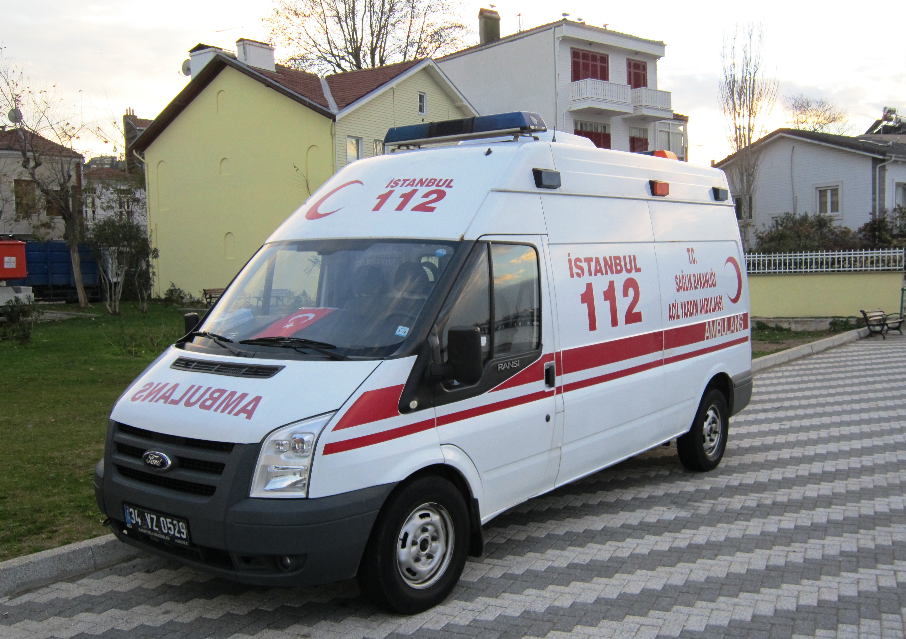
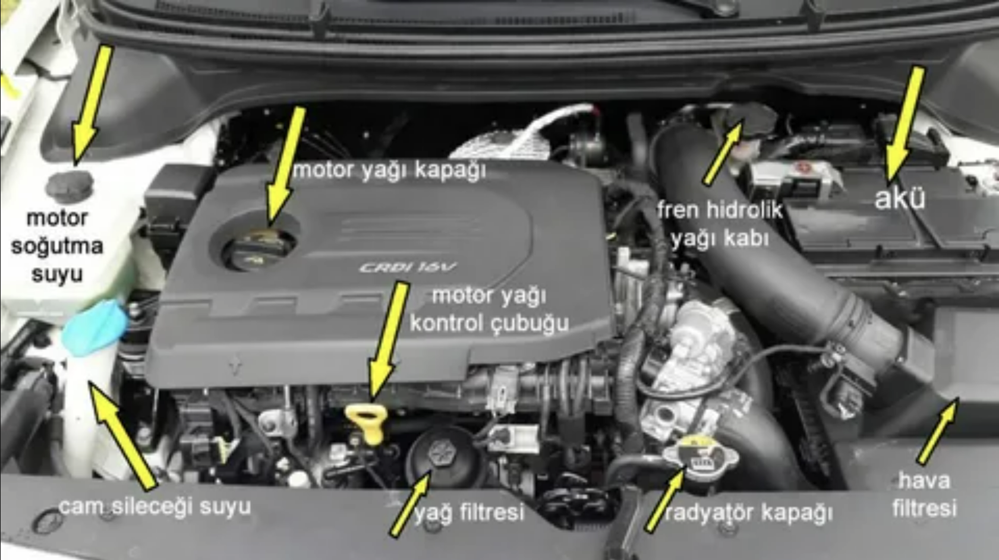
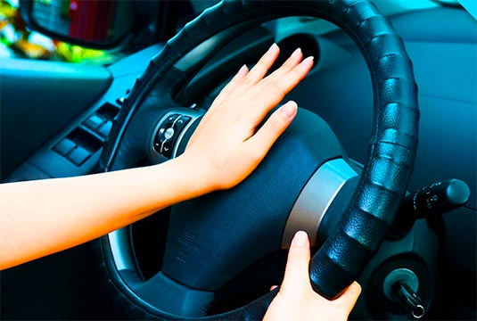

Test 1Levhalar ve Trafik İşaretleri
Temel trafik levhaları ve uyarı işaretleri üzerine test.
20 Soru
25 Dakika
Teste Başla
Konulara göre test çöz, eksiklerini tamamla ve sınava hazırlan.
Levhalar, trafik kuralları ve çevre bilgisi testleri.

Test 1Temel trafik levhaları ve uyarı işaretleri üzerine test.
 Test 2
Test 2
Trafikte uyulması gereken temel kurallar ve çevre bilgisi.
 Test 3
Test 3
Levhalar, kurallar ve genel trafik bilgisini karışık çöz.
Temel ilk yardım ve acil durum testleri.
 Test 1
Test 1
Yaralanma ve acil durumlarda temel müdahale bilgileri.

Test 2Trafik kazalarında doğru ilk yardım adımlarını öğren.

Test 3Motor, bakım ve araç tekniği testleri.
 Test 1
Test 1
Araç motoru ve temel parçalar hakkında test soruları.

Test 2Günlük araç kontrolleri ve bakım süreçleri üzerine test.
Empati, saygı ve doğru sürüş davranışı testleri.
Trafikte diğer sürücülere ve yayalara karşı doğru davranışlar.

Test 2Sürücü sorumluluğu ve trafik adabına uygun hareket etme.
Trafik adabı konularını karışık sorularla pekiştir.